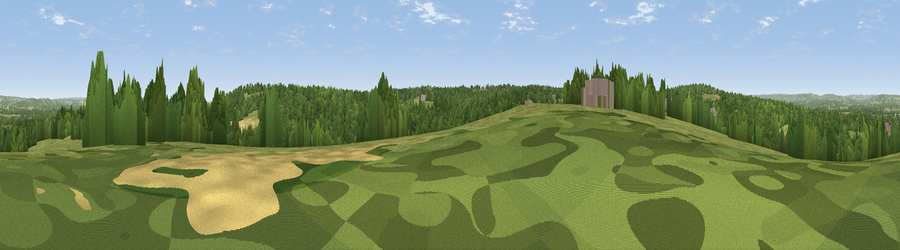

Viewpoint near Colt's Hill
#37012 in England · top 35% of its area beats it · near Colt's Hill · access?Where it is
The exact computed spot (TQ 64225 43125). Click the marker for map links.
Public access: no public right of way or access land is recorded at this exact spot — it may be on private land. Computed from Natural England's CRoW access layer and OpenStreetMap rights of way — not the legal definitive map. Always verify locally.
The view, rendered

A 360° render of this exact spot computed from the terrain model, tree cover and land cover — summer colours, afternoon light, calibrated against photographs of famous viewpoints. Real trees, hedges and buildings will differ in detail.
The panorama
Grey silhouette: terrain skyline in each direction (720 bearings, Earth curvature and refraction included). Dashed green: skyline with trees (+15 m) and buildings (+8 m) as obstacles. Blue strip: how far the ground is visible on each bearing.
Where the view opens
Wedge length = distance to the farthest visible ground on that bearing (vegetation-aware). Rings at 10, 25 and 50 km.
What fills the view
52% woodland · 33% grassland · 12% cropland · 3% built-up
Angular shares of the visible panorama (visual magnitude), not map area. Landscape diversity 0.46 (0–1 Shannon).
Key numbers
More beautiful places nearby
The staircase of upgrades: each row has a higher view potential than everything closer. Driving times are estimates from straight-line distance, calibrated against real road routing — check an actual route before setting out.
| Place | Direction | Drive | Score |
|---|---|---|---|
| Viewpoint near Tudeley | WNW · 4 km | ~8 min | 48.1 |
| Viewpoint near Shipbourne | NW · 12 km | ~23 min | 66.2 |
| Brightling Obelisk [Brightling Down] | S · 22 km | ~37 min | 69.1 |
| Viewpoint near Westwell | E · 34 km | ~52 min | 72.2 |
| Viewpoint near Fairlight | SSE · 38 km | ~57 min | 74.5 |
| Viewpoint near Fairlight | SSE · 38 km | ~57 min | 75.1 |
| Cliffe Hill | SW · 38 km | ~57 min | 79.3 |
| Firle Beacon | SSW · 40 km | ~60 min | 88.9 |
51.16380, 0.34737 · source: screening · position refined by local search. Computed location — check access rights before visiting.